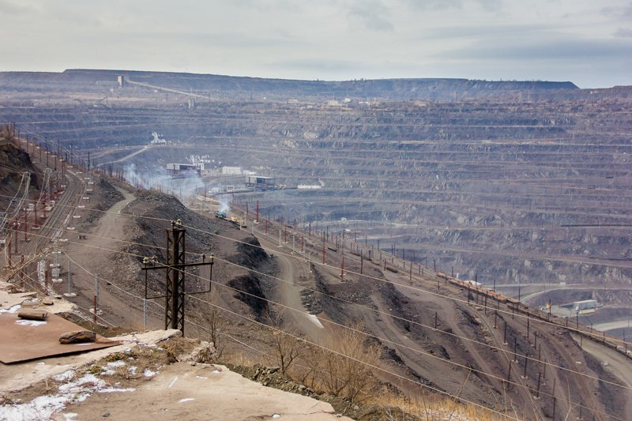
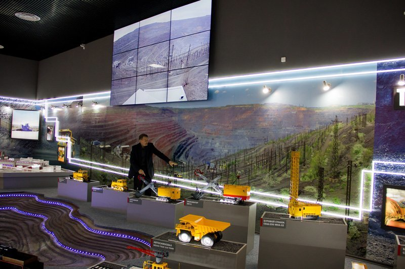
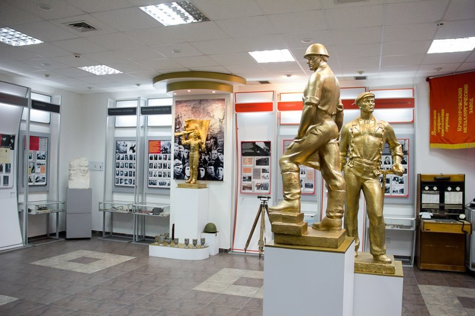
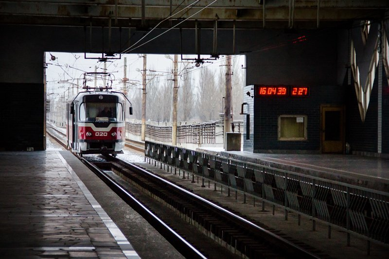
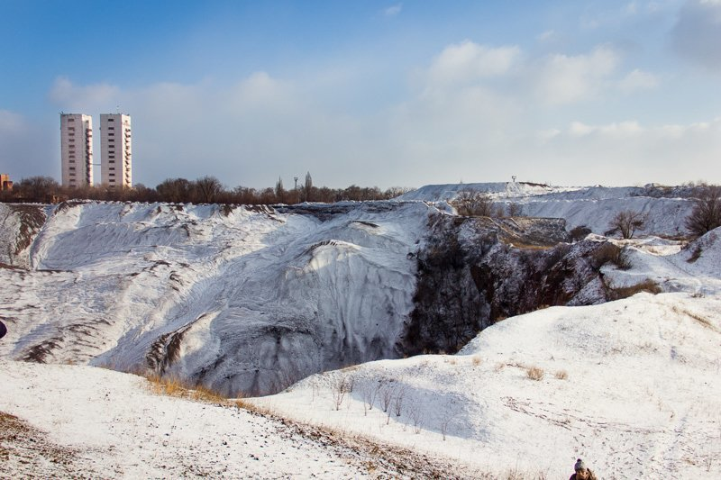
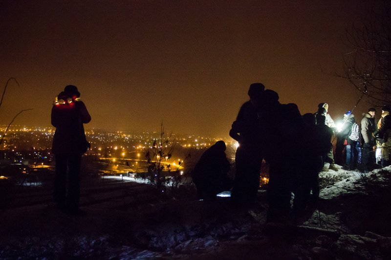
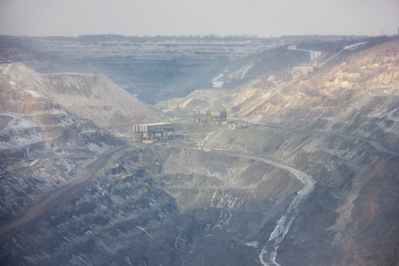

Подорож на Червону Планету, або Кривий Ріг, яким Ви його не знали
Зазвичай плануючи якусь мандрівку, ми дуже рідко звертаємо увагу на промислові райони України. Ну що там може бути цікавого, думає кожен з нас. Поняття промислового туризму з’явилося в Україні досить таки недавно. А вже зараз відбувається його активний розвиток на Дніпропетровщині. Взяти хоча б Кривий Ріг, найдовше місто не тільки України а і Європи з його залізорудними шахтами та кар’єрами. Ще три роки тому туристи в місті були вдивовижу, важко було відшукати пристойний екскурсійний автобус, а більшість підприємств були закриті для відвідування. Але наразі ситуація докорінно змінилася. Тепер гості міста можуть навіть трохи розгубитися від кількості цікавих об’єктів, які можна відвідати, а споглядання майже марсіанських ландшафтів залишить незабутні враження. То що ж варто оглянути та зробити в Кривому Розі, щоб відчути дух цього промислового міста:
-
Побувати на оглядовому майданчику Південного ГЗК
Родзинкою кожної екскурсії містом є відвідування гірничо-збагачувального комбінату. На Південному ГЗК спеціально для туристів збудували зручний оглядовий майданчик, з якого можна спостерігати за роботою в кар’єрі за будь-яких погодних умов. Якщо ви вперше приїхали сюди, то побачене вас вразить. Серце завмирає від відчуття масштабів, величезний кар’єр ярусами заглиблюється в землю, а вагони, крани та білази на його фоні здаються просто іграшковими.
 -
Відвідати музей Південного ГЗК
Після того як ви побачили кар’єр Південного ГЗК варто відвідати однойменний музей, який відкрився відносно недавно і є досить сучасним. Там вам розкажуть про історію розвитку гірничо-збагачувального комбінату, про техніку, яка там працює, покажуть як проходить повний цикл видобутку та відео з вебкамер, що встановлені на кар’єрі.
 -
Побувати в музеї АрселорМіттал Кривий Ріг
Ще один сучасний , цікавий та багатий на експонати музей. Там вам розкажуть про специфіку підприємства, його історію, продукцію, що виробляється, про те, як впроваджуються новітні технології та як борються зі зменшенням шкідливих викидів в атмосферу.
 -
Проїхатися метротрамом
Сісти в вагончик трамваю, а вийти на підземній станції метро, хіба таке можливо? В Кривому Розі - так, бо саме тут частина трамвайних ліній збудована за стандартами метрополітену - з тунелями та підземними станціями. До речі, саме криворізький метротрам - єдине місце в країні, де узаконено лівосторонній рух.
 -
На власні очі побачити унікальні провальні ландшафти
Колись на цих територіях вирувало життя, стояли будинки, росли сади, зараз лише деінде можна побачити їх залишки. Бо тепер це зона величезних проваль, що утворилися внаслідок обвалу верхнього шару ґрунту в місцях видобутку залізної руди. Іноді масштаби проваль вражають, деякі сягають до 200 метрів. На фото зона відчуження шахти Гвардійської.
 -
Зустріти Новий Рік на Петровському відвалі
Ще одна цікавинка Кривого Рогу — відвали, висота деяких з них перевищила 150 метрів. Найбільш відомі та придатні для відвідування — Бурщицький та Петрівський. Якщо новорічні свята вже на порозі, а ви хочете якось цікаво та нестандартно їх відсвяткувати, тоді вам точно до Кривого Рогу. Там вже котрий рік поспіль криворіжці та гості з інших міст збираються на Петровському відвалі для зустрічі Нового Року. Започаткували цю традицію декілька ентузіастів, тоді вони навіть не підозрювали, що їхня авантюра стане популярною і кожного року збиратиме все більше людей. В новорічну ніч з висоти відвалу відкривається фантастичний вид на місто, яке підсвічується святковими феєрверками. Частку адреналіну додасть і сам підйом на відвал.
 -
Побачити другий за довжиною кар’єр в Україні та оцінити масштаби гірничої техніки на Північному ГЗК
Протяжність Ганнівського кар’єру Північного ГЗК сягає аж 6 км. Коли перед тобою відкривається такий пейзаж, то з’являється відчуття інопланетності. При Північному ГЗК також діє скансен гірничої техніки. Тут можна детально роздивитися та оцінити масштаб техніки, яка задіяна на виробництві в кар’єрах.
 -
Сфотографуватися з Козаком Рогом, засновником міста
За однією з легенд саме козак Ріг був засновником міста. А Кривий, бо мав козак лише одне око. За іншою версією назва міста пішла від форми мису, що нагадувала ріг. Але історія історією, а сфотографуватися все таки варто.
-
Звірити час із квітковим годинником
Через дорогу від пам’ятника Козаку Рогу увагу привертає величезний годинник. Влітку він обсаджений квітами, взимку прикрашений лампами. І незважаючи на пору року та зовнішній вигляд завжди точно показу час.
-
Дізнатися більше про історію міста, подивившись невеликий фільм у 3D–відеогалереї Криворізького історико–краєзнавчого музею
Під квітковим годинником знаходиться відео-галерея, де можна переглянути 20-ти хвилинне З-D відео про Кривий Ріг.
-
Поплавати катером по Кресівському водосховищу
Щоб трохи відпочити від промислових об’єктів, можна податися на водну прогулянку невеличким катером по Кресівському водосховищу. З води відкривається чудовий вид на місцевий «Манхеттен» — мікрорайон Зарічний.
-
Прогулятися парком Газети Правди
Незважаючи на величезну кількість шахт та кар’єрів, місто досить таки зелене, в ньому багато парків. Одним з найкрасивіших є парк Газети Правди. Тут тобі і місточки, зелені алеї, фонтани, і навіть човнова станція - не диво, що тут полюбляють фотографуватися молодята.
-
Відвідати місця зйомок фільму «Червоний» (Кочубеївські штольні)
Кочубеєві штольні знаходяться в селі Ганнівка. Залізорудний кар'єр було закладено у 1904 році місцевими панами Кочубеями, його довжина 185м, а глибина 35 м. Це місце стало досить популярним серед туристів після того, як тут відбулися зйомки деяких сцен фільму «Червоний».
-
Побувати в концтаборі
Ще одна локація зйомок фільму «Червоний» — це і є той концтабір у якому проходять майже всі події фільму. Червоні криворізькі ґрунти доповнюють гнітючу атмосферу так званого концтабору. Не знаю, що зараз збереглося з того всього, бо фотографії робилися ще на момент ведення зйомок фільму.
-
Побувати на «Марсі»
Один з місцевих екскурсоводів сказав: «Якщо ви не можете побувати на Марсі, приїжджайте до Кривого Рогу». І дійсно, на вас тут чекають справжні марсіанські пейзажі — все червоне: і вода, і земля, і навіть дим.